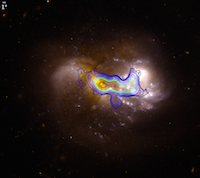
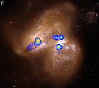

Luminous Infrared Galaxies
 Ultra/Luminous infrared galaxies (U/LIRGS) are extraordinary systems that exhibit some of the most extreme star formation in the local universe. The intense star formation is believed to be triggered by the merger of two gas-rich galaxies but the mechanism is not yet well understood. High-resolution carbon monoxide (CO) observations show that they molecular gas is concentrated near the nuclear regions of the systems. Since molecular gas is the fuel for current and future star formation, understanding the physical conditions and distribution of the warm, dense gas in the local U/LIRGS will help in better understanding the details of star formation in the most luminous galaxies and, of course, the history of galaxy formation and evolution.
 We use the sample of Wilson et al. (2008) that consists of 14 U/LIRGs observed using the Submillimeter Array (SMA) to study the distribution and kinematics of the molecular gas. The observations are used to constrain the physical conditions such as density and temperature using the radiative transfer code RADEX (van der Tak et al. 2007). RADEX solutions for Arp 299 have shown that the overlap region is similar to giant molecular clouds (GMCs) of the normal spiral galaxy M33 but on a much larger scale (Sliwa et al. 2012). For VV 114, we find an unusually large [12CO]/[13CO] abundance ratio, nearly 3 times as large as the local ISM value (Sliwa et al. 2013).